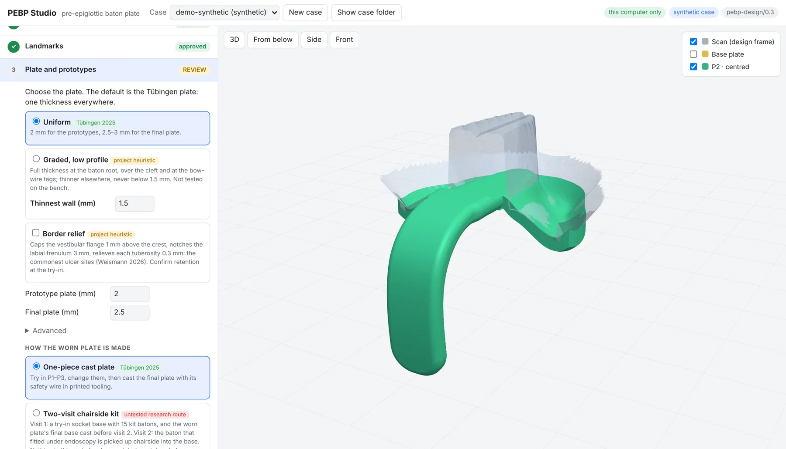

The pipeline
One command per step, one record per patient
Each step writes files and adds to a single design record (design.json), so every endoscopy try-in and sleep study is logged against the exact device that was in the mouth.
Orient the scan
Finds the arch, tuberosities and incisive papilla, then puts the scan in a fixed frame: occlusal plane at z = 0, origin midway between the tuberosities, millimetres.
Block out the cleft
Measures the cleft band by band and bridges it, so the plate rests on the shelves rather than in the gap. The clinician enters the cleft type from the exam; the scan never decides it.
Build plate and prototypes
A 2 mm plate with the published Tübingen extension attached, written as three prototypes P1–P3 with the baton 2 mm back, centred and 2 mm forward.
Log the try-in
A structured endoscopy form records what was changed (shorten, tilt, narrow). Each change becomes a new device A1, A2… by deforming the published baton along its skeleton.
Check every design
QC against the published thickness and width rules, plus a reach check against infant airway norms. Failures are marked STOP and need a named person to override.
Make the tooling
A four-piece printed mold, a cradle and a wire-bending jig to cast the final plate in cold-cure PMMA with its safety wire, plus a demold simulation.
Prototypes P1–P3
Three tries, two millimetres apart
In Tübingen the first fitting uses a set of plates whose extensions differ in position, and the one that sits best under the endoscope is kept published · Aretxabaleta 2025. The software writes that set as P1–P3, shifting the whole baton 2 mm back and forward project heuristic.
The drawing is a true section through the generated models at the midline. Anterior is to the left. The extension is 3.5 mm thick here, above the published 3 mm minimum published.
Modular try-in kit
Fifteen batons, one socket
An alternative, untested route: one try-in base with a socket, and fifteen slide-in batons that vary length and angle. Pick one to see it seated. project heuristic · untested
Across the kit the tip moves 5.5 mm front to back and 11.5 mm up and down, against 4 mm for P1–P3. Kit batons are for supervised try-in only and are never worn.
Casting the final plate
Printed tooling, cast acrylic
The worn plate stays cold-cure PMMA with a cast-in safety wire, as in Tübingen published. The printer only makes tooling: a working model, an oral counter that lifts straight up, and two extension halves that part sideways around the baton.
The wire runs from about 1 cm after the root to 1.5–2 mm before the tip published. In this case it is 27.7 mm long and stops 2.0 mm short of the tip. Drag the slider to take the mold apart in order.
PEBP Studio
The same pipeline as an app on your computer

Studio walks a case through six steps: case, landmarks, plate and prototypes, baton changes, checks and mold. Each step is approved by a named person, and the approvals are stored with fingerprints of the files they cover.
- Runs on the local computer only. The server answers this machine and nothing else, so scans never leave it.
- Clinical choices, such as the cleft type, are marked as clinical and stored with who entered them.
- STOP findings hold an approval until someone reads them and approves anyway, on the record.
- On a Mac it installs as a desktop app with a starter folder of synthetic sample scans.
What the checks enforce
Rules, and where each one comes from
| Rule | Value | Source |
|---|---|---|
| Extension thickness | ≥ 3 mm | published Aretxabaleta 2025 |
| Narrowing of the extension | never > ½ width | published Aretxabaleta 2025 |
| Final plate thickness | 2.5–3 mm | published Aretxabaleta 2025 |
| Safety wire span | ~10 mm after root → 1.5–2 mm before tip | published Aretxabaleta 2025 |
| Prototype plate thickness | 2 mm | project heuristic |
| Prototype spacing | 2 mm steps | project heuristic |
| Reach compared with infant norms (tongue 56.8 mm tip to valleculae at birth) | plausibility only | published Vorperian 2005 · use here inference |
| Tip target, sleep index and threshold | per case | Clinical choice. Stored and flagged; the software never sets it. |
Where it stands
Software complete for phase 0. Nothing physical yet.
Built and tested in software
- Scan to plate, prototypes, QC and design record
- Endoscopy fitting form and change log
- Casting tooling and demold simulation
- Modular kit and two-visit chairside route
- PEBP Studio desktop app
- 30-check synthetic regression suite, all passing
Not done
- No part has been printed or cast
- Bench tests (fit, release, wire pull-out, fracture) not started
- No clinical evaluation or regulatory review
- Imaging, endoscopy-video and sleep-study experiments still to come
Download
Get PEBP Designer
Free for noncommercial research and teaching (PolyForm Noncommercial 1.0.0). Python 3.12; runs on macOS, Linux and Windows. The desktop app installer is macOS only for now.
PEBP Studio for Mac
The six-step app in its own window, with sample synthetic scans and a walkthrough.
Download PEBP Designer (.zip)Unzip, install as under “Source”, then run:
.venv/bin/pip install -r requirements-app.txt .venv/bin/python -m pebp app --install
Source and command line
The pebp package, all commands, and the regression suite.
cd pebp_demo python3.12 -m venv .venv .venv/bin/pip install -r requirements.txt .venv/bin/python -m pebp studio
Try it on a synthetic case
No scan needed: make a synthetic palate, design it and open the viewer.
pebp synth --out out/demo --preset prs pebp design out/demo/scan.stl --out out/demo pebp mold out/demo pebp viewer out/demo
Sources
References
- Aretxabaleta M, et al. 2025. Bioengineering 12:1063. Standard extension STLs and technical drawing, CC BY 4.0; the published thickness, width, plate and wire rules.
- Aretxabaleta M, et al. 2022. Bioengineering 9:773. doi:10.3390/bioengineering9120773. Measurement scheme for plate sections PS0–PS5, effective and sagittal length.
- Vorperian HK, et al. 2005. J Acoust Soc Am 117:338. doi:10.1121/1.1835958. Vocal tract dimensions at birth.
- Perez C, et al. 2020. Paediatr Anaesth. doi:10.1111/pan.13869. Tongue position in Robin sequence.